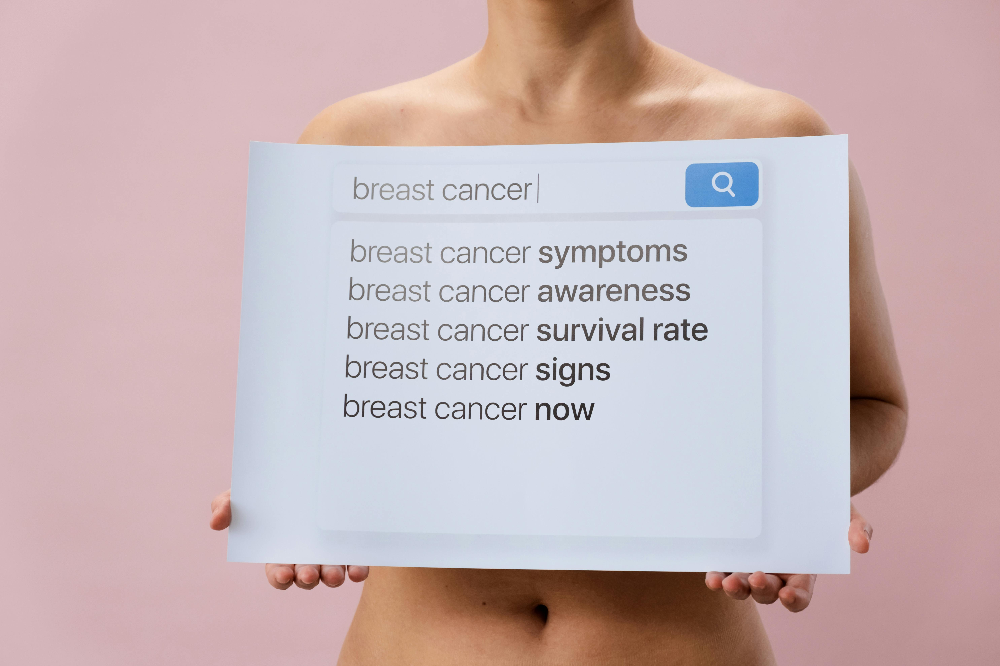

Oncology: Pathophysiology & Molecular Therapeutics
Biological Overview
Cancer arises when normal cells acquire the ability to divide uncontrollably, escaping the usual checks and balances. These changes are driven by mutations in critical genes—proto‑oncogenes that become overactive, and tumor suppressor genes that are silenced. Over time, a single abnormal cell can give rise to a population of malignant cells that invade nearby tissues.
Tumor Microenvironment and Angiogenesis
Tumors are not just masses of cancer cells; they actively remodel their surroundings. By secreting growth factors, they stimulate the formation of new blood vessels—a process called angiogenesis—that delivers oxygen and nutrients. This microenvironment also includes immune cells, fibroblasts, and signaling molecules that can either suppress or promote tumor progression.
Detailed Classification
- Adenocarcinomas: These originate in glandular tissues such as the lungs, breast, prostate, or colon. They account for most solid tumors and often secrete mucin or other substances.
- Basal Cell Carcinoma: The most common skin cancer, arising from the basal layer of the epidermis. It grows slowly and rarely metastasizes, but local invasion can be destructive.
- Multiple Myeloma: A cancer of plasma cells in the bone marrow. It leads to bone lesions, anemia, and immune dysfunction due to overproduction of abnormal antibodies.
Understanding the Global Burden
According to the World Health Organization, nearly 20 million new cancer cases were diagnosed in 2025, and about 10 million people died from the disease. That means roughly one in five men and one in six women will develop cancer during their lifetime. The burden is not evenly distributed—about 70% of cancer deaths occur in low‑ and middle‑income countries, where access to early detection and treatment is limited.
The most common cancers globally are breast, lung, colorectal, prostate, and stomach cancers. Lung cancer remains the leading cause of cancer death, responsible for nearly one in five fatalities.
How Cancer Is Staged
Staging describes the extent of cancer in the body. It helps doctors plan treatment and estimate prognosis. The TNM system—Tumor, Node, Metastasis—is the most widely used.
- Stage 0: Abnormal cells are present but have not spread (carcinoma in situ).
- Stage I: Cancer is small and confined to the organ where it started.
- Stage II and III: Larger tumors that may have grown into nearby tissues or spread to lymph nodes.
- Stage IV: Cancer has spread to other parts of the body (metastatic disease).
What Increases the Risk of Cancer?
No single cause explains all cancers, but several factors are known to increase risk. Some are within our control; others are not.
Modifiable risks
- Tobacco use—accounts for about 25% of all cancer deaths.
- Excess body weight and obesity, linked to 13 types of cancer.
- Unhealthy diet low in fruits and vegetables.
- Physical inactivity.
- Alcohol consumption, even in moderate amounts.
- Infections such as HPV, hepatitis B and C, and H. pylori.
Non‑modifiable risks
- Advancing age—most cancers occur in people over 50.
- Inherited genetic mutations (e.g., BRCA1/2, Lynch syndrome).
- Family history of certain cancers.
- Previous cancer history.
Environmental exposures
- Ultraviolet radiation from the sun or tanning beds.
- Ionizing radiation (medical imaging, radon).
- Air pollution, classified as carcinogenic.
- Occupational chemicals like asbestos, benzene, and formaldehyde.
Steps to Reduce Cancer Risk
While not all cancers can be prevented, a healthy lifestyle can significantly lower the odds. The World Cancer Research Fund estimates that about 30–40% of cancers could be avoided through diet, weight management, and physical activity.
- Stay tobacco‑free. If you smoke, quitting is the single most important step.
- Maintain a healthy weight. Excess fat, especially around the waist, increases risk.
- Eat a plant‑based diet. Fill half your plate with vegetables, fruits, and whole grains.
- Be physically active. Aim for at least 150 minutes of moderate activity each week.
- Protect your skin. Use sunscreen, wear protective clothing, and avoid tanning beds.
- Get vaccinated. HPV and hepatitis B vaccines prevent infection‑related cancers.
- Participate in screening. Regular mammograms, colonoscopies, and Pap tests catch cancer early.
Recent Advances in Oncology
Cancer research is moving rapidly. Here are three areas where patients are already seeing benefits.
CAR‑T cell therapy
In this approach, a patient's own T cells are engineered to recognize and attack cancer cells. It has produced remarkable responses in certain leukemias and lymphomas, and clinical trials are now testing it against solid tumors like glioblastoma and sarcoma.
Liquid biopsies
A simple blood test can now detect tiny fragments of tumor DNA. This allows doctors to monitor how well treatment is working, spot recurrence earlier, and even identify which targeted therapies might be effective—all without an invasive tissue biopsy.
AI‑assisted pathology
Machine learning algorithms are being trained to examine biopsy slides. In studies, they match or even exceed the accuracy of expert pathologists in detecting breast cancer metastases and lung cancer subtypes, potentially speeding up diagnosis and reducing errors.
Clinical trial opportunities: Many of these new treatments are available only through research studies. Patients should ask their oncologist about trials that might be appropriate for their specific cancer type and stage.
Multidisciplinary Management
Targeted Therapy
Drugs designed to attack specific genetic abnormalities within cancer cells, such as HER2 in breast cancer or EGFR in lung cancer, often with fewer side effects than chemotherapy.
Immunotherapy
Treatments like checkpoint inhibitors (e.g., pembrolizumab) help the immune system recognize and destroy cancer cells. They have become standard for melanoma, lung cancer, and many others.
Radiation Oncology
Modern radiation techniques, such as proton therapy and stereotactic body radiotherapy, deliver high doses precisely to the tumor while sparing surrounding healthy tissue.